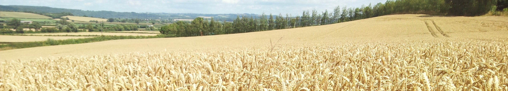

Dakota Harvest of Hope is dedicated to supporting farmers and agricultural workers experiencing mental health challenges, including post-traumatic stress, related to agricultural life. We focus on building community, fostering connection, and creating a space where individuals can share experiences and support one another.
Farming presents unique and often intense pressures. Unpredictable weather, financial uncertainty, and the responsibility of sustaining communities can create significant mental and emotional strain. These challenges are often faced in isolation, making support and connection critical.
We believe that meaningful support comes from those who understand the realities of agricultural life.
Dakota Harvest of Hope operates as a peer support and community-focused organization. We do not provide medical or clinical mental health services, but instead aim to complement existing resources by fostering connection and shared understanding.
If you would like to support Dakota Harvest of Hope, we appreciate your interest. To donate or learn more about supporting our mission, please email us at:
contact@yourdomain.org
We will provide additional information on how you can contribute and support our efforts.